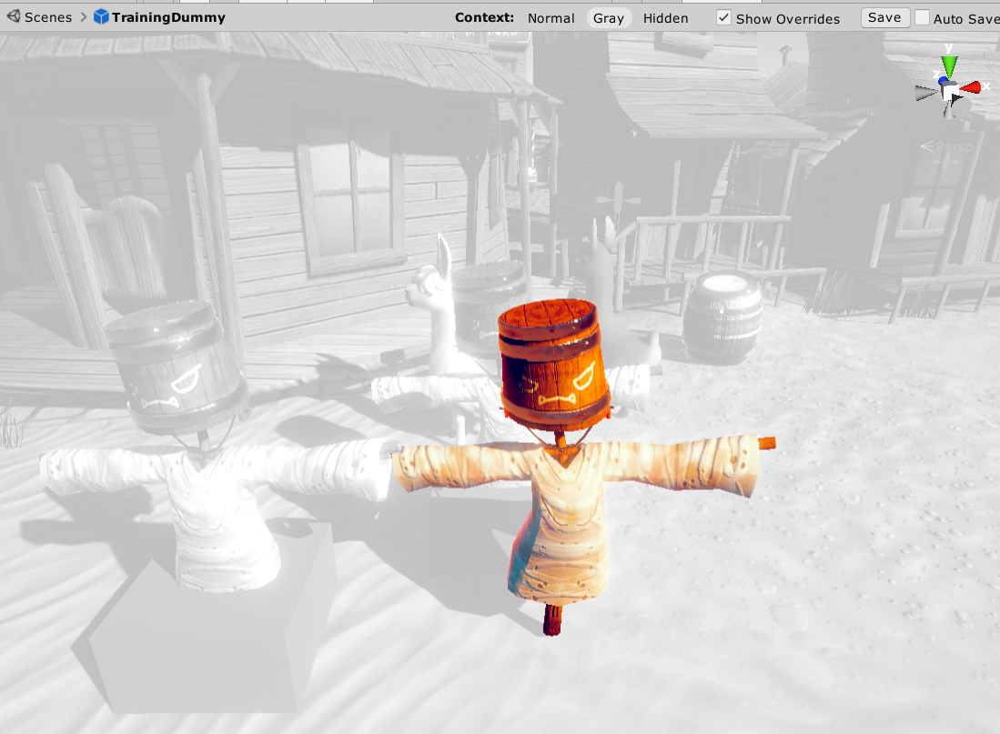
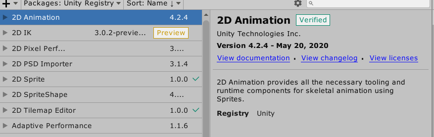
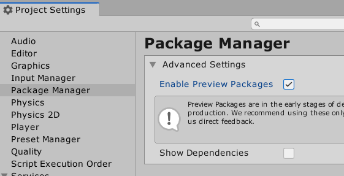
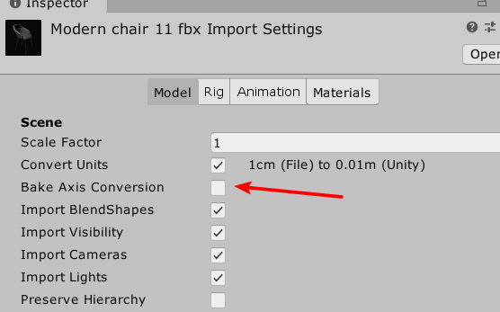
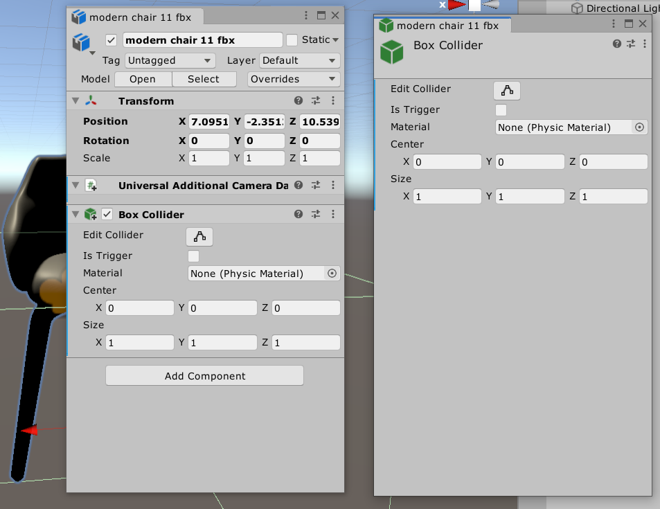
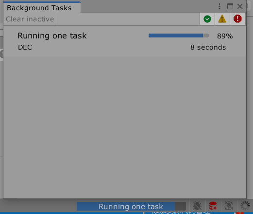
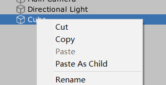
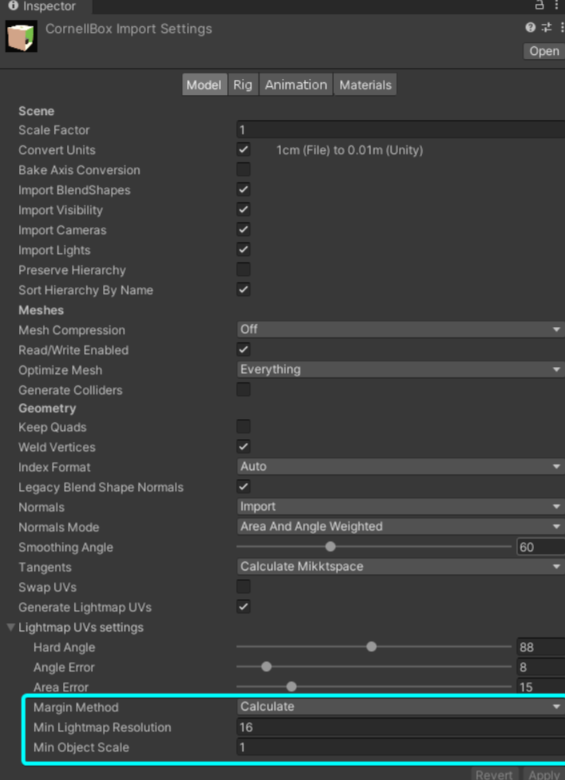

编辑器和工作流
在场景中编辑预制体
三种显示模式，帮助编辑

包管理UI更新，

开启预览包需要从project中设置

移除了对Chromium Editor Framework的支持
包体小了
轴转换烘培
fbx导入资产可能存在轴方向错误的问题

资产导入管线v2
单独的属性窗口,单独的组件窗口

后台任务窗口
创建一个组件，引入UnityEditor，通过Process来执行一个异步任务，并通知给任务窗口显示
using UnityEditor;
public IEnumerator Run_OneTask()
{
// Create a new progress indicator
int progressId = Progress.Start("Running one task", "description");
// Report the progress status at anytime
for (int frame = 0; frame <= 1000; ++frame)
{
Progress.Report(progressId, frame / 1000.0f);
// Do something else
yield return null;
}
// The task is finished. Remove the associated progress indicator.
Progress.Remove(progressId);
}

Unity Accelerator
局域网代理和缓存服务
Addressables 改进
其他
剪切，粘贴

程序工具
Profiler 工具改进
Profiler 独立程序
Visual Studio 集成
New C# debugging workflow
支持泛型类型域
简化了对泛型类型的支持，旧版本中需要手动实现一个继承自泛型的类型，使用该类型作为属性，新版本中则可以直接在组件中引用泛型类型，让属性面板正确显示我们指定的样式
namespace OldVersion
{
public class SerializeFieldTest : MonoBehaviour
{
public GenericClassOfString stringClassField;
}
public class GenericClass<T>
{
public T test;
}
[Serializable]
public class GenericClassOfString : GenericClass<string> { }
}
namespace NewVersion
{
public class SerializeFieldTest1 : MonoBehaviour
{
public GenericClass<string> stringClassField;
}
[Serializable]
public class GenericClass<T>
{
public T test;
}
}
Burst Compiler 1.3
Profile Analyzer
美术工具
Burst编译提升2D动画性能
2D Sprite Shape
2D Sprite Shape是2D图形变形工具，适合制作不规则的虚幻贴图设计，迪休自动调整，材质自动修正等方便场景设计的2D图片功能
1.角样式，不必单独设置角精灵
2.网格烘培
2D模板项目更新
2D物理更新
Cinemachine改进
动画更新
Animation Rigging 是一套用来制作3D骨骼关节行为的的套件，设置很多不同的约束器，让运动看起来更自然，可以大量减少动画文件的浪费
Kinematica是一套次世代的角色动画系统
图形
相机栈
灯光更新
灯光设置现在是一个资产文件了，不再是场景文件的一部分
Overlap-free packing
自动打包边距，避免光照贴图的重叠

CPU和GPU光照贴图改进
光照贴图改进
减少了烘培时间
Lightmapped cookie support
Contributors/Receivers Scene View Mode
Ray tracing for animated Meshes
射线追踪动画网格
Streaming Virtual Texturing
高分纹理，减少GPU内存和纹理加载时间
平台
输入系统
Pre-release tech
UI Toolkit
用来构建UGUI程序，方便安排UI和风格
Kinematica
次世代动画套件
Animation Rigging
动画绑定，创建骨骼约束，减少动画文件大小
Cinemachine
运镜系统
Device Simulator
设备模拟器
New caching shader preprocessor
新的着色器缓存预处理，帮助快速构建
Code Coverage
代码覆盖率测试
Terrain Tools
地形工具
Streaming Virtual Texturing
流式虚拟纹理
光追
UI Builder
可视化的编辑器UI构建工具
Havok Physics
Havok物理引擎
Unity Physics
Unity物理系统，基于DOTS技术栈
Memory Profiler
内存分析器
Vector Graphics
矢量图形工具，最大的发挥矢量图的优势
Experimental 2D Graphics Features
2Drender和通用渲染管线兼容，相机栈，2D阴影
Build Report Inspector
构建报告属性检查器
Sprite Atlas v2
v2图集
Pixar’s Universal Scene Description
皮克斯文件，一种大型资产文件格式